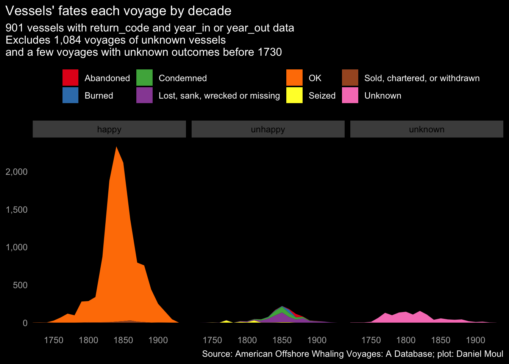

4 The vessels
The vessels’ size and the materials and technology that went into their construction evolved significantly during the years of American whaling: from wooden sailing ships to iron and steel ships powered by diesel engines.
4.1 Vessel rig
In the dataset vessels’ rigs were classified as Ship, Schooner, Bark, Brig, Sloop, or a combination of them. Descriptions of the codes at whalinghistory.org are here, and the Maritime Museum of the Atlantic offers definitions for most of them. Wikipedia has larger list of ship types. The most common rigs are shown below.
4.2 Tonnage
Vessels size (measured in tonnage) increased at the peak of the industry, then declined.
4.3 Voyages per vessel
Half the vessels in the dataset made three or fewer voyages. One made 38.
4.4 Age
How old were the ships when they started their voyages? Median age was 17 years.
The vessel median age declined from 1840s to the 1860s as more ships were built to cash in on the whaling boom. Then from the 1870s the median age stayed fairly constant.
4.5 Demise
Some vessels, on their last voyage, did not return, or did not return as whalers. This includes 901 of 2,832 (32%) known vessels. Most of the unhappy results were lost, sank, wrecked, or condemned (16%), which is a reminder that whaling (and seafaring in general) was a precarious line of work. Often vessels were employed until they wore out.
The vessel name is unknown for 1,084 of the 15,608 voyages. (7%). How many of these vessels are already included in the data set? There is no way to know, and an estimate would be an arbitrary guess.

The eventual unhappy outcomes need to be put in a larger context. Looking at this by voyage rather than vessel, things look a lot better:
